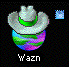
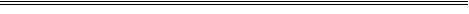
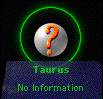
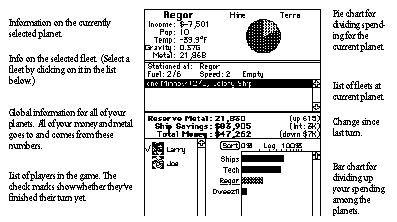
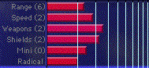

Beim Start zeigt Spaceward Ho! einen Dialog, in dem Sie ein neues Spiel beginnen oder ein gesichertes fortsetzen können. Wählen Sie „Neues Spiel “. Danach müssen Sie Ihrer Galaxie einen Namen geben. Als Nächstes erscheint ein großer, furchteinflößender Dialog „ Galaxis erstellen “. Klicken Sie einfach auf „ Erstellen “.
Am besten lernen Sie Spaceward Ho!, indem Sie das Spiel beim ersten Mal spielen, während Sie das Handbuch lesen. Wir haben versucht, dieses Buch so zu ordnen, dass es Ihre Fragen beantwortet, sobald sie auftauchen. Wir werden Ihnen nicht den Quatsch „Lesen Sie das ganze Handbuch gründlich, bevor Sie zu spielen anfangen“ auftischen. Setzen Sie sich hin und versuchen Sie sich am Spiel. Denken Sie nur daran, dass Sie Fragen haben werden und dieses Handbuch sie beantwortet.
Sie können auch im Menü „ Galaxis “ den Eintrag „ Autospiel …“ einschalten und sehen, wie der Computer spielen würde. So bekommen Sie eine Vorstellung vom Ablauf, und Sie können das automatische Spielen jederzeit ausschalten und selbst übernehmen.
Spaceward Ho! hat drei Fenster. Sie können die Fenster verschieben und in der Größe ändern, wie Sie wollen, sodass Sie das Spiel für Ihre Monitore und Ihren Spielstil einrichten können. Spaceward Ho! sichert Ihre Fensteranordnung beim Beenden automatisch und stellt sie beim nächsten Spiel wieder her, sodass Sie nicht ständig daran herumfummeln müssen.
Das Hauptfenster ist das einzige wirklich wichtige Fenster in Spaceward Ho!. Es enthält die Sternkarte sowie die Informationen zu Budget, Planeten und Flotten. In der Titelleiste des Fensters steht etwa „Peter in Milchstraße im Jahr 2000“, was bedeutet, dass Sie gerade als Peter im Spiel „Milchstraße“ im Jahr 2000 angemeldet sind. Na klar.
Der rechte Teil des Hauptfensters von Spaceward Ho! ist die Sternkarte. Sie zeigt Ihnen, wo Sie sind, wo Sie gewesen sind und wohin Sie fliegen können. Mit der Sternkarte bewegen Sie Schiffe (klicken und von einem Stern zum anderen ziehen) und wählen den Planeten aus, den Sie ansehen und bearbeiten wollen.
Auf der Sternkarte sehen Sie verschiedene Arten von Sternen. Vorerst erklären wir nur die, die Sie ganz am Anfang eines Spiels sehen können.

Hier leben Sie. Es ist ein dicht bevölkerter, hochrentabler, technisch fortgeschrittener Planet, bereit, hinauszugehen und das Universum zu erkunden. Hier bauen Sie Ihre ersten Schiffe.

Ein unerforschter PlanetZu Spielbeginn ist alles außer Ihrem Heimatplaneten unerforscht. Sobald Sie zu einem Planeten fliegen, erfahren Sie mehr über ihn, und sein Bild ändert sich entsprechend Ihren neuen Entdeckungen. Die übrigen Planetenarten werden später im Kapitel „Planeten“ behandelt.

Wenn Sie einen Planeten auswählen, wird er hervorgehoben, indem er eine Korona bekommt. Alle Informationen über den Planeten werden darunter angezeigt.
Das Berichtsfenster ist ein scrollbarer Verlauf der wichtigen Dinge, die in den letzten Zügen geschehen sind. Jede Nachricht erscheint zu Beginn jedes Zuges in der linken unteren Ecke der Sternkarte. Klicken Sie auf die Nachricht, geht es zur nächsten. Haben Sie alle Nachrichten gelesen, erscheint unten links auf der Karte ein Uhrsymbol „Zug beenden“.
Es gibt viele verschiedene Arten von Nachrichten. Erkunden Sie einen Stern, bekommen Sie eine Nachricht über Temperatur und Schwerkraft des Sterns. Kolonisieren Sie einen Planeten, bekommen Sie eine freundliche Meldung. Sind Sie in einen Kampf verwickelt, bekommen Sie eine Nachricht, die das Ergebnis zusammenfasst.
Sie können im Berichtsfenster auf eine alte Nachricht klicken, um weitere Informationen zu erhalten. Klicken Sie zum Beispiel auf eine Kampfzusammenfassung, spielt Spaceward Ho! den Kampf noch einmal ab. Klicken Sie auf eine Nachricht, die einen Planeten erwähnt, scrollt die Karte zu diesem Planeten und wählt ihn aus.
Die Zahlen in den Budgetinformationen dienen nur zur Information. Sie können sie nicht direkt ändern. (Obwohl es praktisch wäre, zu sagen: „Ich gebe mir einfach etwas mehr Geld!“) Was Sie ändern können, ist das Balkendiagramm darunter.

Die BalkendiagrammeDie wichtigsten Bedienelemente in Spaceward Ho! sind Ihre Balkendiagramme. Mit ihnen geben Sie Ihr Geld aus und setzen Ihre Strategie um. Anders als die langweiligen Balkendiagramme auf Folien bei Geschäftspräsentationen können Sie die Balkendiagramme in Spaceward Ho! verändern.
Mit dem Budget-Balkendiagramm teilen Sie zum Beispiel Ihr Geld auf Ihre Kolonien auf. Sie können einen Teil davon auch für die Technikforschung verwenden und einen Teil für Ersparnisse und Schiffbau zurücklegen. Je größer Sie den Balken rechts neben einem Planetennamen machen, desto größer ist der Anteil Ihres Gesamtbudgets, der an diesen Planeten geht. Klicken und ziehen Sie mit der Maus im Balkendiagramm, um den Balken bis dorthin zu verlängern oder zu verkürzen, wo Sie geklickt haben, wobei den anderen Balken anteilig etwas hinzugefügt oder abgezogen wird.
Um also dieselbe Geldmenge für Technik und für Ihren Planeten auszugeben, klicken und ziehen Sie direkt am Technikbalken. Wenn Sie die Maus bewegen, sehen Sie, dass der Technikbalken steigt, während die anderen sinken, und sinkt, während die anderen steigen. Stellen Sie ihn so ein, dass Technikbalken und Kolonienbalken gleich lang sind. Dasselbe könnten Sie auch erreichen, indem Sie am Balken des Planeten ziehen. Suchen Sie es sich aus.
Ersparnisse sind Geld, das für später und für den Schiffbau zurückgelegt wird. Im Allgemeinen ist es klug, etwas für schlechte Zeiten zu sparen. Auf Ihre Ersparnisse bekommen Sie Zinsen, genau wie bei Ihrer Bank vor Ort.
Die Informationen zum gerade ausgewählten Planeten erscheinen darunter. Wählen Sie eine wachsende Kolonie aus, sehen Sie einen Schieberegler, der zeigt, wie das Geld, das Sie für diesen Planeten ausgeben, auf Abbau und Terraformen aufgeteilt ist. Machen Sie sich auch hier nicht zu viele Gedanken darüber, wie viel Prozent Sie genau für jeden Posten ausgeben; versuchen Sie nur, die Verhältnisse richtig hinzubekommen.
Geben Sie Geld für das Terraformen aus, um die Temperatur eines Planeten auf 72° zu bringen. (Das ist Ihre Lieblingstemperatur.) Hat ein Planet schon 72°, können Sie kein Geld mehr für das Terraformen ausgeben.
Geben Sie Geld für den Abbau aus, um die Ressourcen des Planeten freizusetzen und das Metall für den Schiffbau verfügbar zu machen. Auch hier gilt: Ist dem Planeten das Metall ausgegangen, können Sie kein Geld mehr für seinen Abbau ausgeben.
Das „Einkommen“ eines Planeten ist, wie viel zusätzliches Geld ein Planet in Ihr Gesamtbudget einbringt. Bei einem Planeten, den Sie gerade kolonisiert haben, ist es negativ, was bedeutet, dass Sie Geld hineinpumpen müssen, nur um ihn am Leben zu erhalten. Je mehr ein Planet Ihrem Heimatplaneten gleicht (der 72° und 1,00 G hat), desto mehr Gewinnpotenzial hat er. Planeten, die Ihrem Heimatplaneten zu unähnlich sind, werfen nie Gewinn ab.
Mit den Schiebereglern für die Technikausgaben legen Sie fest, welche Technologien Sie am stärksten entwickeln wollen. Je nach Strategie, Philosophie und aktueller Spielsituation erforschen Sie vielleicht unterschiedliche Technologien. Meistens müssen Sie an diesem Fenster nicht viel herumspielen.

Deutsche Übersetzung des Remakes, keine offizielle, des Handbuchs von Delta Tao. Die Seite auf Englisch (auf Englisch).